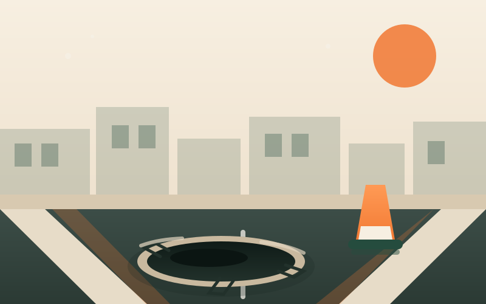
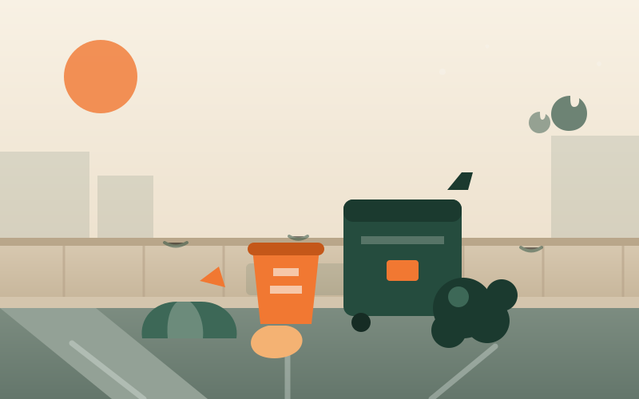
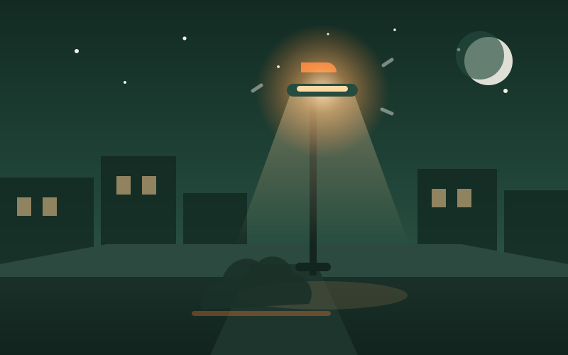
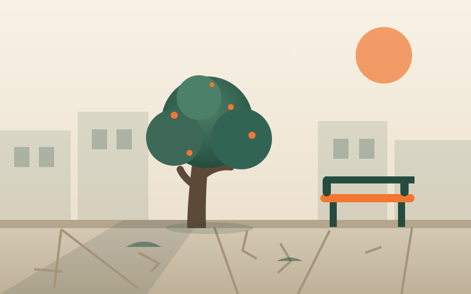

Elevado SLA 48 h 3 fotosBachesVV-2041
Av. San Martín 1200 · Centro
Ocupa casi toda la mano derecha y ya provocó la caída de un ciclista. Empeora con cada lluvia.
Explorá lo que reportaron tus vecinos, sumá apoyos para elevar la prioridad y seguí el estado de cada reclamo hasta su resolución.

Elevado SLA 48 h 3 fotosAv. San Martín 1200 · Centro
Ocupa casi toda la mano derecha y ya provocó la caída de un ciclista. Empeora con cada lluvia.

En curso SLA 24 h 4 fotosRivadavia y Sarmiento · Barrio Norte
Bolsas, escombros y restos de poda sin retirar desde hace diez días. Ya aparecieron roedores.

En curso SLA 72 h 2 fotosPasaje Los Álamos 300 · Los Aromos
La cuadra queda completamente a oscuras desde las 19. Ya hubo intentos de robo en la zona.

Nuevo SLA 96 h 1 fotoMitre 450 · Centro
Baldosas levantadas en la salida de la escuela. Una mamá se lastimó la semana pasada.
Plaza San Vicente · San Martín
La reparación ya fue realizada y verificada por vecinos. El reclamo se mantiene público.
Los Cedros 88 · Los Aromos
Bache de un metro de ancho. Entra agua en los garajes y los autos sufren daños.
Costanera y Almirante Brown · Costanera
El basural vuelve cada semana. Los vecinos piden contenedores fijos y una solución definitiva.
Belgrano 210 · Barrio Norte
Desnivel peligroso para personas mayores y con movilidad reducida. Pedimos una inspección.
Probá con otra categoría, otro estado o una palabra distinta. También podés crear el primer reporte de este tema.
Ver todos los reclamosSumá fotos, ubicación y una descripción clara. Tus vecinos se encargan de darle visibilidad.